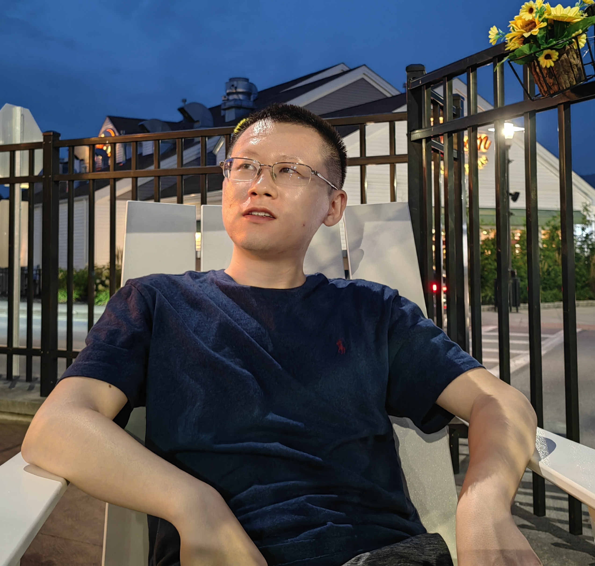

Dr. Wenqi Wei
Assistant Professor, Fordham University
Dr. Wenqi Wei is a tenure-track assistant professor at Fordham University. He received PhD in Computer Science from Georgia Institute of Technology in 2022. He was fortunate to work with Professor Ling Liu in the Distributed Data Intensive Systems Lab (DiSL). After graduation, he spent some short but wonderful time at IBM Research. He received my Bachelor's degree in Electronics and Information Engineering (B.E.) with summa cum laude from Huazhong University of Science and Technology.
His research interest includes trustworthy data management and systems, data privacy, responsible data analysis (fairness, accountability, transparency), intelligent data management (for financial service, healthcare, and misinformation) with particular focus on representation learning, online learning (multi-armed bandits), and foundation models. You are welcome to visit this homepage for up-to-date research activities.
He lived in Atlanta, Georgia when he was a teenager, and attended Samuel M. Inman Middle School (now David T. Howard Middle School, home to MLK Jr.) and Henry W. Grady High School (now Midtown High School). He graduated from Inman with Awards for Achieving Highest Average in Science, Outstanding Achievement in ESOL, CRCT (Math & Science), and Honor Roll Certificate.
News
Recruitment
- Research Group Recruitment
We have PhD openings with guaranteed support for 5 years (Deadline every year around mid January). You are welcome to contact me regarding the PhD in Computer Science opportunities.
- Research Group Recruitment
I am always looking for self-motivated students/scholars to work on trustworthy AI, big data analysis, and/or whatever topics identified by our collaborators at IBM Research/Cisco Research/Google/Meta/... Please read these core values from Meta before contacting me, and include your CV and intention of interests in the email. Recently, I am interested in security and privacy problems in LLM and AI Agent, as well as AI-driven information systems.
Recent Events
- Call for Paper
I am honored to serve as the PC co-chair for IEEE CIC 2026. Please consider submitting your latest research contributions and joining us in advancing the field. See you in San Jose, CA this Nov!
- May 2026 I am honored to receive the 2026 IEEE Big Data Security Junior Research Award.
- Apr 2026 Our paper "Scaling Laws in Model Fine-tuning for Audio DeepFake Detection" has been accepted to ICML 2026.
- Apr 2026 I am honored to receive the Distinguished Research Award for Junior Faculty at Fordham University.
- Apr 2026 One paper on self-reasoning for LLM alignment has been accepted to ACL 2026.
- Feb 2026 Our paper on using LLM for financial statement fraud detection has been accepted to ACM TOIT.
- Feb 2026 Our paper "GradCloak: Gradient Obfuscation for Privacy-Preserving Distributed Learning as a Service" has been accepted to IEEE Trans. Services Computing.
- Dec 2025 Our ICIS25 paper received Best Student Paper nomination. We thank the organizers for recognition.
- Aug 2025 I am honored to serve as an associate editor for IEEE Transactions on Big Data.
- Jul 2025 Our paper on the cybersecurity vulnerability of code generation with LLMs has been accepted to ICIS25.
- Jun 2025 Our paper "On the Adversarial Robustness of Graph Neural Networks with Graph Reduction" has been accepted to ESORICS25.
- Feb 2025 Congratulate Xiang on his first paper named "Where are we in audio deepfake detection? A systematic analysis over generative and detection models" being accepted to ACM TOIT.
- Sep 2024 Our book chapter "Data Poisoning and Leakage Analysis in Federated Learning" in Handbook of Trustworthy Federated Learning has been published.
- May 2024 I am honored to serve as an associate editor for ACM TOIT.
- May 2024 Our paper "Diversity-driven Privacy Protection Masks Against Unauthorized Face Recognition" has been accepted to PETS24.
- Apr 2024 Our paper "Imperio: Language-Guided Backdoor Attacks for Arbitrary Model Control" has been accepted to IJCAI24.
- Jan 2024 Our paper "Trustworthy Distributed AI Systems: Robustness, Privacy, and Governance" has been accepted to ACM Computing Surveys.
- Jan 2024 One paper on efficient training of language models for Ethereum Fraud Detection has been accepted to TheWebConf 2024.
- Dec 2023 Our paper "Demystifying Data Poisoning Attacks in Distributed Learning as a Service" has been accepted to IEEE Trans. Services Computing.
- Sep 2023 Two papers on privacy analysis and adversarial robustness have been accepted to IEEE ICDM23.
- Aug 2023 I am honored to serve as the tutorial co-chair for IEEE International Conference on Big Data 2023.
- May 2023 Our paper "Securing Distributed SGD against Gradient Leakage Threats" has been accepted to IEEE TPDS.
- Feb 2023 Our paper "STDLens: Securing Federated Learning Against Model Hijacking Attacks" has been accepted to CVPR23.
- Oct 2022 I am being added to the Distinguished Review Board for ACM Transactions on the Web (appointed 2023-2025).